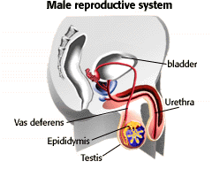

Human Reproduction Problem Set
Problem 6: The sperm journey
Tutorial to help answer the question
| Sperm are stored in the _________, ascend into the __________ prior to ejaculation, and are discharged from the penis through the __________. |
Tutorial
Sperm journey through the male body
|  |
In the testis, sperm form in the seminiferous tubules, but are stored in the epididymis where they mature. They move through the vas deferens and mix with secretions from the seminal vesicle and bulbourethral gland to form the semen. They enter the urethra at the base of the penis.
The urethra is the duct that can carry either urine or semen. It originates at the bladder, meets the vas deferens at the base of the penis, runs through the penis, and opens to the outside at end of the penis. |


University of Arizona
Updated: July 15, 1999
Contact the Development Team
http://www.biology.arizona.edu
All contents copyright © 1996-99. All rights reserved.